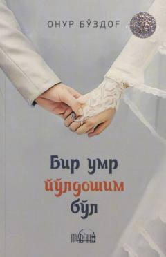

BUOila va nikoh munosabatlarini islomiy qadriyatlar asosida mustahkamlashga bagʻishlangan asar.
Ushbu kitob oilaviy munosabatlarni islomiy qadriyatlar asosida mustahkamlash va jufti halollar oʻrtasidagi mehr-oqibatni saqlab qolish haqida soʻz yuritadi. Muallif oilani qalb qoʻrgʻoni sifatida tasvirlab, zamonaviy dunyo tashvishlari ichida xotirjamlikka erishish yoʻllarini tushuntiradi.